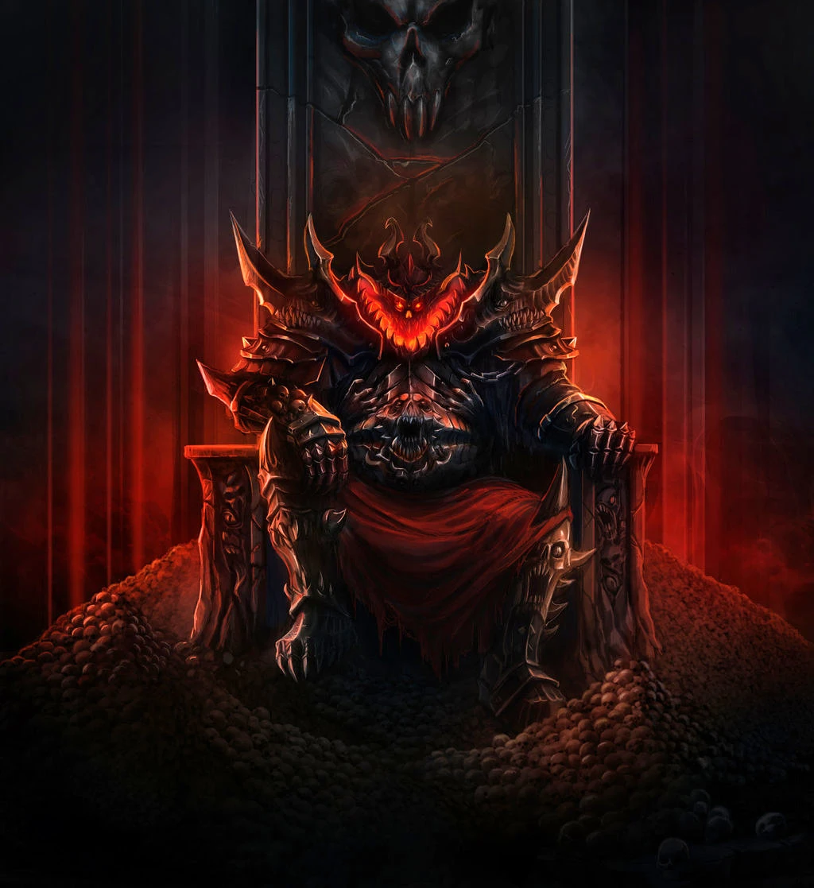

The 4 Chaos gods of Warhammer40k universel
Detail about the ruinistion power
Khorne
Khorne is the god of war and bloodshed, representing the brutal and violent aspects of conflict. His followers seek to spill blood in his name, and he is often depicted as a massive, muscular figure surrounded by skulls and the remnants of his enemies.
Learn more about KhorneTzeentch

Tzeentch is the god of change, magic, and knowledge. He is often depicted as a constantly shifting figure, embodying the concept of change itself. His followers seek to gain knowledge and power through manipulation and deceit.
Learn more about TzeentchNurgle

Nurgle is the god of disease, decay, and death. He is often depicted as a bloated, rotting figure surrounded by flies and other vermin. His followers embrace decay and corruption, believing that through suffering and endurance, they can achieve a form of immortality.
Learn more about NurgleSlaanesh

Slaanesh is the god of pleasure, excess, and decadence. He is often depicted as a beautiful and alluring figure, embodying the pursuit of pleasure and indulgence. His followers seek to experience all forms of sensation and excess, often to the point of self-destruction.
Learn more about Slaanesh